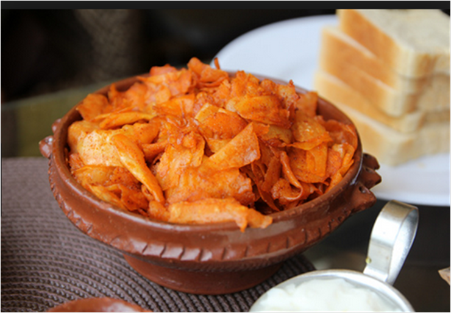

Chechebsa

Description
The following is a recipe for making chechebsa, a popular breakfast eaten in Ethiopia and Eritrea.
Ingredients
- 1 tablespoon oil
- 1 cup all purpose flour
- 1/2 tablespoon salt
- 3/4 cup water
- 4 tablespoon niter kibbeh (Ethiopian spiced butter)
- 2 tablespoon berbere (Ethiopian spice blend)
Steps:
- Heat the pan with oil in it.
- Mix the flour with the salt.
- Add 1/2 cup water and keep whisking, adding 2 tablespoon more water at a time as needed, and whisking until smooth like a thin pancake batter.
- Pour the batter into the hot pan over medium heat. Spread the batter into a single layer to form a large pancake (called kita).
- Cook 2-4 minutes or until bottom is lightly browned.
- Flip the kita, and cook the other side another 1-2 minutes or untile lightly browned and cooked through.
- Set the cooked kita aside for a few minutes to cool.
- Tear the kita into small pieces.
- Melt the butter on a pan and mix it with the berbere.
- Add the small pieces of the kita to the butter-pepper powder pan and mix thoroughly.
- Scoop it to a bowl or plate and serve it with hot tea or coffee.